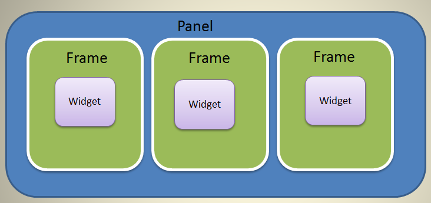

ArcGIS WebApp Builder is built with ArcGIS API for JavaScript and Dojo. It allows you to customize and extend functionalities by creating your own widgets and themes.
An ArcGIS WebApp Builder widget is a set of text files that you can share, move, and deploy to an ArcGIS WebApp Builder application.

A widget can be a single JavaScript file, which is an AMD module, or can be as complicated as an AMD package, such as a Dojo package. The above screen capture represents a widget that has a template, configuration file, style file, and internationalization support.
Typically, a widget encapsulates a set of isolated and focused business logics in which users can conduct a task. A widget is not only visually interactive with the user, but can also connect to server side resources such as map services from ArcGIS Server or ArcGIS Online.
An ArcGIS WebApp Builder widget must extend the BaseWidget class (BaseWidget.js). By extending the BaseWidget class, a new JavaScript class is recognized by the ArcGIS WebApp Builder’s WidgetManager as a deployable widget.
For more details, see the walkthrough for developing a widget.
A panel is a UI element that displays the widget’s content. Multiple widgets can display in one panel.
By using panel, the widget developer does not have to deal with how the widget and its content (data) displays in the HTML viewer. However, the widget developer can choose to not utilize the provided panel (for more details, see the Widget Development section). For example, the Scalebar widget has its own unique UI.
You can modify or create new panels to obtain new functionality, such as making the widget display movable by dragging, and so on.
A theme defines the UI of the web app created by ArcGIS WebApp Builder. Themes define:
Developers need sufficient knowledge and experience using HTML and JavaScript to develop web applications.
Dojo is the base platform for [ArcGIS API for JavaScript] (https://developers.arcgis.com/en/javascript/) and ArcGIS WebApp Builder.
To develop a widget for ArcGIS WebApp Builder, a level of familiarity with the ArcGIS JavaScript API is recommended, or at least familiarity with the samples provided by Esri.
Although the required software is a basic text editor, a standards-compliant web browser, and an Internet connection, the following are recommended for efficient development:
To develop a widget, create a new BaseWidget subclass in the widget folder. The following demonstrates how to create a custom widget from scratch. The screen captures shown below are from Sublime text in which the ArcGIS WebApp Builder directory opens.
All of the code for demo widgets are in the stemapp/widgets/samplewidgets/Demo folder. You can view demo widgets through http://your host/webapp/?config=sample-configs/config-demo.json.
Although a widget’s resources can be named differently, the following are recommended:
Widget.js.Widget.html.config.json file and put it into the widget folder.strings.js file and put it into the nls folder. For more information, see Dojo’s documentation at http://dojotoolkit.org/documentation/tutorials/1.8/i18n/.style.css file and put it into the css folder. Put all of the images used by the style into the css subfolder, called images.icon.png file name and put it into the images folder.manifest.json to describe the widget’s content.For more information on what a panel is, see the Theme Development section for more details.
Two types of widgets are supported. One is a widget without a panel (such as Scalebar widget, Overview widget, and so on) and another is anin panel widget. Therefore, you make a decision, before coding, about whether your widget needs a panel or not. There are some differences between them:
You can set the inPanel property in the widget’s manifest.json. For more details, see Package your widget.
A widget at a minimum requires one file, the JavaScript file that defines it. However, for a more full-featured widget, there are multiple files to define it, including the HTML template, i18n support, styles, and so on. All of these will be demonstrated.
First, to keep your widget files, create a folder (samplewidgets/Demo). Next, create the following set of folders and files in the folder:

JavaScript is not a classical language. It is a prototypical object oriented language. As such, to make most developers comfortable with developing widgets, the ArcGIS WebApp Builder uses Dojo’s functions to create and extend classes. The ArcGIS WebApp Builder defines the BaseWidget class from which you create the child class, Widget.
Open Widget.js in a text editor. The basic code for extending BaseWidget is:
define(['dojo/_base/declare', 'jimu/BaseWidget'],
function(declare, BaseWidget) {
//To create a widget, you need to derive from BaseWidget.
return declare([BaseWidget], {
// DemoWidget code goes here
});
});This code:
DemoWidget class as a child class of BaseWidget.For more information, see http://dojotoolkit.org/documentation/tutorials/1.8/declare/.
The following properties are required by the programming model:
The code looks like the following:
define(['dojo/_base/declare', 'jimu/BaseWidget'],
function(declare, BaseWidget) {
//To create a widget, you need to derive from BaseWidget.
return declare([BaseWidget], {
// DemoWidget code goes here
baseClass: 'jimu-widget-demo'
});
});ArcGIS WebApp Builder widgets have an HTML template. This template defines the widget’s UI.
Open the Widget.html file in a text editor. Replace it with this:
<div>
<div>I am a demo widget.</div>
</div>At this point, test your widget. Open config-demo.json (in stemapp/sample-configs folder). Find widgetPool->widgets, and add a new widget element like this:
{
"label": "demo",
"uri": "widgets/samplewidgets/Demo/Widget"
}Start the ArcGIS WebApp Builder through http://you host/webapp/?config=sample-configs/config-demo.json ,and click the icon. The widget appears like the following:

Note
By default, the widget’s template does not support dijit in the template. If you need to use dijit in the template, add dijit/_WidgetsInTemplateMixin into your required list, and mixin this class into your widget. Meanwhile, ensure that you have required all of the dijits used in the template. For more information, see Creating Template-based Widgets
Currently, there are no configuration options for the Demo widget.
To change that, open config.json in the widget folder in a text editor. Add some JSON-structured text so that you can pass the config to your widget:
{
"configText":"abcdefg"
}Alter the HTML template to use the config that you have read from your config file.
<div>
<div>I am a demo widget.</div>
<div>This is configurable.[${ config.configText}]</div>
</div>Now, the Demo widget looks like the following:

The ${configData.configText} marker in the template is automatically substituted with the values in the config.json file.
Currently, in the Demo widget, there are some hard-coded English language strings:
To internationalize the UI, generally you should isolate these strings in a separate language-specific resource file and reference the strings by their identity. Dojo provides complete i18n support, which is sensitive to user settings in the browser. For example, if Chinese translation is defined, and a user visits your web application with their browser language code set to zh-cn, they should automatically get the Chinese UI. For more information, see http://dojotoolkit.org/documentation/tutorials/1.8/i18n/.
The first step is to abstract the user interface strings to the default resource file. The user determines the translation of these strings.
Open the nls/strings.js file with a text editor. Add the following:
define({
root:{
label1: "I am a demo widget.”
label2: "This is configurable."
},
"zh-cn": true
});Create a folder named zh-cn and create a strings.js file in it. The following is the content:
define({
label1 : "我是一个演示widget。",
label2 : "这里可以配置。"
});Apply the changes to the template by removing the hard-coded English language and replacing it with markers:
<div>
<div>${nls.label1}.</div>
<div>${nls.label2}.[${configData.configText}]</div>
</div>Reload your ArcGIS WebApp Builder application. This time, add a URL parameter, locale=zh-cn, or you change the browser’s locale configuration to view the change.

To support specific languages, create folders under the nls/ folder, named by the language code (for example, en, fr, ru). Copy the strings.js file to that folder and update the content to reflect the language for that code.
On the HTML page, a CSS file is used to layout the page, making it user friendly. The recommended way is to use a separate style file to write the CSS rules. Put the widget CSS in the css/style.css file.
Open the css/style.css file and add the following code:
.jimu-widget-demo div:first-child{
color: red;
}Note that all of the selectors in the style.css file should contain the base CSS class to avoid name conflict.
Open the viewer. The widget resembles the following:

For more information about themes, see the Theme Development session.
By default, all of the CSS rules you write are applied in all themes. If you want to apply some CSS rules for a specific theme or theme style, write your CSS rule like this:
.themeName .styleName {your selector}{
}The ArcGIS WebApp Builder is a map-centric application. It provides map property defined in the BaseWidget class to access the map. You can access the map property through this.map. . The widget’s map property is a type of esri.Map from ArcGIS JavaScript API, configured in the config.json file. You can access all the map features provided by ArcGIS JavaScript API. Code the widget just like writing a regular ArcGIS JavaScript application.
When a widget is instantiated, the map passes into it. As a result, you can access a map property in the postCreate or startup methods.
Modify the UI template and add a div tag to display the map id property:
<div>
<div>${nls.label1}.</div>
<div>${nls.label2}.[${configData.configText}]</div>
<div data-dojo-attach-point="mapIdNode"></div>
</div>Add JavaScript code to access map:
startup: function(){
this.inherited(arguments);
this.mapIdNode.innerHTML = 'map id:' + this.map.id;
}Response to the app container
The widget is a dojo dijit; therefore, when a widget is instantiated, it goes through the full life cycle of a dijit, such as constructor, postCreate, startup and so on. For more information, see http://dojotoolkit.org/documentation/tutorials/1.9/understanding_widgetbase/
In addition to the dojo dijit’s life cycle functions, the widget has other callback functions that you can use:
onOpen- Called each time the widget opens. When a widget is instantiated, this method is called after startup.
onMaximized- Called when the widget is maximized. This method may never be called in some panels that do not have a maximize/minimize state.
onMinimized- Called when the widget is minimized. This method may never be called in some panels that do not have a maximize/minimize state.
onClose- Called when the widget closes.
onSignIn- Called when a user signs in to the portal/AGOL.
onSignOut- Called when a user signs out from the portal/AGOL.
onPositionChange- Called when widget’s position (left, right, top, bottom, width, height) changes. The widget’s position may be changed when the user changes the layout in the builder.
resize- Called when the window resizes.
TThe following are additional properties to use in widgets:
| Name | Description |
|---|---|
| id | The unique ID of the widget set in the config.json file or generated by the app container. |
| label | Set in the config.json file |
| icon | The widget’s icon URL |
| config | The widget’s config object |
| map | The map this widget works to |
| appConfig | The app's main config.json file is stored here. |
| folderUrl | The widget folder’s URL. |
| state | The widget’s current state, that is, opened or closed. |
| windowState | The widget’s current window state, that is, normal, maximized, or minimized. |
To implement a consistence UI style and make development work easier, the widget developer should use the CSS classes and dijits provided by the app container.
You can view these components from http://you host/webapp/jimu.js/tests/test-dijit.html and http://you host/webapp/jimu.js/tests/test-css.html. Note that these CSS classes and dijits will be added and updated as the app container evolves.
The CSS classes can be found in jimu.js/css/jimu.css.
| Name | Description |
|---|---|
| jimu-input | Styled input tag |
| jimu-btn | Styled button using div |
| Jimu-icon-btn | Button with an icon in the center |
| Jimu-nav-bar | Group of icon buttons |
| jimu-oe-row | Odd even row |
The dijits: (can be found in jimu.js/dijit)
| Name | Description |
|---|---|
| CheckBox | N/A |
| RadioBtn | N/A |
| DrawBox | N/A |
| ColorPicker | N/A |
| Popup | N/A |
| ImageChooser | N/A |
| TabContainer | N/A |
| ExtentChooser | N/A |
| Message | N/A |
| LayerFieldChooser | N/A |
| PopupConfig | N/A |
| SymbolChooser | N/A |
The jimu.js file does not only support a responsive UI layout but also provides functions for developers to develop responsive widgets.
There are two ways to archive the responsive goal: CSS and layout dijit .
The CSS classes can be found in jimu.js/css/jimu.css.
| Name | Description |
|---|---|
| jimu-r-row | One row of the layout |
| col-1-2 | The width is half of its parent |
| col-1-3 | The width is one third of its parent |
| col-2-3 | N/A |
| col-1-4 | N/A |
| col-3-4 | N/A |
The dijits can be found in jimu.js/dijit
| Name | Description |
|---|---|
| TileLayoutContainer | N/A |
If both of them cannot meet your requirements, follow the responsive UI best practices.
As the requirement of reading or sending data between widgets is common, the BaseWidget class supports this programming model.
In the constructor of the BaseWidget class, it subscribes the publishData, dataFetched, and noData events. Meanwhile, the BaseWidget class provides the publishData and fetchData methods.
If you want the widget to publish data, call the publishData method. If you want the widget to receive data from another widget, call the fetchData method, and write code to override the onData and onNoData methods to read data.
The widget is a dojo dijit, which derives from the BaseWidget dijit; therefore, you can use the existing dijit as normal. With performance considerations, don’t mixin the _WidgetsInTemplateMixin in the BaseWidget. If you need to use dijit in the widget’s UI template file, mixin this class and require all of the dijits that you use in the template file. For more information, see Creating Template-based Widgets for more information.
If the widget is configurable, the user can change the widget’s behavior by editing the config.json file. For a better user experience, the widget should provide a config UI to config itself when it is configured in the builder.
These are the conventions the widget should follow:
BaseSetting class. In this class, there is a config property that holds the widget config data.getConfig, return the config data input by the user and setConfig to initialize the widget setting page depending on the widget config data.During development, you can use http://your host/webappbuilder/?appid=stemapp to directly access your widget.
The widget is easily packaged and shared. As a result, all of the widget contents are placed in the widget folder with a description file named, manifest.json, which is a JSON object and contains following properties:
| Attribute | Type | Description | Required | Default |
|---|---|---|---|---|
| name | String | The name identifies the widget. The name should be the same as the folder name under the widgets folder. | Y | N/A |
| 2D | Boolean | Determines if the widget supports 2D | N | True |
| 3D | Boolean | Determines if the widget supports 3D. | N | False |
| platform | String | Should be HTML. | Y | N/A |
| version | String | The format is 0.0.1. | Y | N/A |
| author | String | N/A | N | N/A |
| description | String | N/A | N | N/A |
| copyright | String | N/A | N | N/A |
| license | String | N/A | N | N/A |
| properties | Object | See the following Properties table. | N | N/A |
Properties table for widgets:
| Attribute | Type | Description | Required | Default |
|---|---|---|---|---|
| inPanel | Boolean | The widget displays in a panel by default. The developer can change this behavior. If it's not in a panel, the widget displays directly. | N | true |
| hasLocale | Boolean | The framework loads the i18n files by convention. | N | true |
| hasStyle | Boolean | N/A | N | true |
| hasConfig | Boolean | N/A | N | true |
| hasUIFile | Boolean | N/A | N | true |
| hasSettingPage | Boolean | N/A | N | true |
| hasSettingUIFile | Boolean | N/A | N | true |
| hasSettingLocale | Boolean | N/A | N | true |
| hasSettingStyle | Boolean | N/A | N | true |
| isController | Boolean | If the widget is a controller widget, set this property to true. | N | false |
After this file is complete, can zip the widget and share the package to the widget repository.
A theme defines panels, styles, and layouts. One app can include more than one theme, but can only use one theme while running.
A theme is a folder named as the theme name. It contains the following files:
Similar with a widget, a theme must have an icon file named icon.png, which is under the images folder.
A common.css file under the theme folder. It contains style content that is common for all styles.
A theme can include multiple styles in the styles folder. Each style is a folder that named as the style name. Each style must have a style.css file. A style named default is necessary.
A theme can include multiple panels in the panels folder. Each panel is a folder named as the panel name. Each panel must have a Panel.js file.
• A theme can include multiple layouts in the layouts folder. Each layout is a folder named as the layout name. Each layout must have a config.json file and an icon.png file. A layout named default is necessary.
A manifest.json file to describe the theme content. The followings are its properties:
| Attribute | Type | Description | Required | Default |
|---|---|---|---|---|
| name | String | The theme’s identity. It must be the same as the theme folder name. | Y | N/A |
| label | String | The displayed text for the theme. | Y | Theme's name |
| styles | [] | A list of theme styles. Each style has a name, description, and styleColor properties. | Y | N/A |
| panels | [] | A list of theme panels. Each panel has a name and description properties. | Y | N/A |
| layouts | [] | A list of theme layouts. Each layout has a name and description properties. A layout is a configuration template file, which contains some widget configurations but leaves the uri property empty. | Y | N/A |
| version | String | The version format is 0.0.1. | Y | N/A |
| author | String | N/A | N | N/A |
| description | String | N/A | N | N/A |
| copyright | String | N/A | N | N/A |
| license | String | N/A | N | N/A |
ArcGIS WebApp Builder provides two out-of-box themes, FoldableTheme and TabTheme. You can develop custom themes if these themes do not meet your requirements.
In the created Demo theme, there is one panel, two styles, and two layouts. The panel is called SimpleBorderPanel, and has a basic border. One style, called default, has red as a main color, and another called black, has black as a main color. One layout called default, places one widget on the left side, and is the other called right, places one widget on the right side.
Notes:
stemapp/themes/DemoTheme in our source code repository. You can try the Demo theme in the builder.stemapp/themes by default).As described above, to create a theme, you need to create some necessary files under the theme folder. Here is the file structure of the Demo theme:

The manifest.json file describes the theme’s content, and the builder reads this file to get the theme’s content. Based on the specification described above, update the manifest.json file as follows:
{
"name": "DemoTheme",
"panels": [
{
"name": "SimpleBorderPanel",
"description": "This is a panel with a border"
}
],
"styles": [
{
"name": "default",
"description": "this is default style",
"styleColor": "red"
},
{
"name": "black",
"description": "this is black style",
"styleColor": "#000000"
}
],
"layouts": [
{
"name": "default",
"description": "this is the left layout"
},
{
"name": "right",
"description": "this is the right layout"
}
],
"version": "0.0.1",
"author": "Esri R&D Center Beijing",
"description": "",
"copyright": "",
"license": "http://www.apache.org/licenses/LICENSE-2.0"
}A panel is a UI element that used to display the widget’s content. Multiple widgets can use the same panel. However, the widget does not display directly on the panel. It is put in the WidgetFrame, then the widget frame displays on the panel. One widget frame holds one widget, and one panel can contain more than one widget frame. The following image gives you a general picture about the relationships of the panel, widget frame, and widget.

Developing a panel is the hardest work for a custom theme. To create a panel, you need JavaScript, CSS, and HTML knowledge. It is also beneficial to understand the dojo’s layout knowledge.
To create a panel, create a class that derives from BaseWidgetPanel. If the default widget frame meets your requirements, create a frame class that derives from BaseWidgetFrame.
You can override some functions when you create your panel:
createFrame- This function returns the widget frame object.reloadWidget- This function is called by the builder when the widget is modified.The meaning of the following functions is the same as widget:
onOpenonCloseonMaximizeonMinimizeonNormalizeBecause the SimpleBorderPanel is very basic, extend the BaseWidgetPanel without adding any new features. See the following code:
define(['dojo/_base/declare',
'jimu/BaseWidgetPanel'
],
function(declare, BaseWidgetPanel) {
return declare([BaseWidgetPanel], {
baseClass: 'jimu-widget-panel jimu-border-panel',
});
});For more information about panels, see BaseWidgetPanel.
You need to write some style (CSS) files to make the theme more beautiful. In the style files, you can override the styles in jimu.css, and write the styles that your panel needs as well. Place the common styles (used by all of the styles) in the common.css file, and the specific styles in the corresponding style.css files.
There should be a style named default, to use when the theme is selected in the builder.
Because the default style’s main color is red, use the following style:
.jimu-border-panel{
border: 1px solid red;
}.jimu-border-panel{
border: 1px solid black;
}A layout is a config template file, which contains some widget config properties but leaves the uri property empty. When the app’s layout is changed, the builder does the following:
There should be a layout named default. This layout is used when the theme is selected in the builder to create the app config object.
{
"preloadWidgets": {
"panel": {
"uri": "themes/DemoTheme/panels/SimpleBorderPanel/Panel"
},
"widgets": [{
"label": "Scalebar",
"uri": "widgets/Scalebar/Widget",
"position": {
"left": 25,
"bottom": 25
}
}, {
"label": "Coordinate",
"uri": "widgets/Coordinate/Widget",
"inPanel": false,
"position": {
"left": 200,
"bottom": 10
}
}, {
"label": "Select a basemap",
"uri": "widgets/BasemapGallery/Widget",
"inPanel": true,
"position": {
"left": 45,
"top": 5,
"width": 430,
"height": 520
}
}, {
"position": {
"left": 95,
"top": 5,
"width": 400,
"height": 410
}
}]
},
"map": {
"position": {
"left": 0,
"top": 0,
"right": 0,
"bottom": 0
}
}
}{
"preloadWidgets": {
"panel": {
"uri": "themes/DemoTheme/panels/SimpleBorderPanel/Panel"
},
"widgets": [{
"label": "Scalebar",
"uri": "widgets/Scalebar/Widget",
"position": {
"left": 25,
"bottom": 25
}
}, {
"label": "Coordinate",
"uri": "widgets/Coordinate/Widget",
"inPanel": false,
"position": {
"left": 200,
"bottom": 10
}
}, {
"label": "Select a basemap",
"uri": "widgets/BasemapGallery/Widget",
"inPanel": true,
"position": {
"left": 45,
"top": 5,
"width": 430,
"height": 520
}
}, {
"position": {
"right": 95,
"top": 5,
"width": 400,
"height": 410
}
}]
}
}Start the builder and create a new app. If no errors occur, the Demo theme shows in the Themes tab.
During development, use http://your host/webappbuilder/?appid=stemapp to access your theme directly.